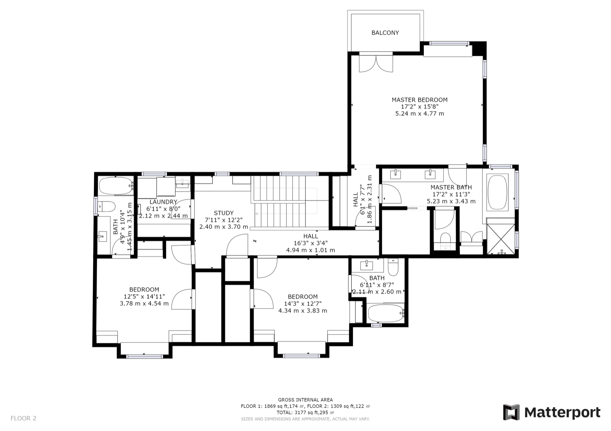

Ortsunabhängig besichtigen
Interessenten erkunden die Immobilie jederzeit, auch aus einer anderen Stadt oder dem Ausland.
Interessenten besichtigen rund um die Uhr, von überall. Aus einem Scan entsteht alles, was dein Exposé braucht.
Käufer und Mieter suchen online. Eine begehbare 3D-Tour hebt sich vom Foto-Exposé ab, erreicht auch ortsferne Interessenten und filtert unpassende Anfragen vor dem ersten Termin.
Interessenten erkunden die Immobilie jederzeit, auch aus einer anderen Stadt oder dem Ausland.
Nur ernsthafte Interessenten fragen einen Termin an. Das spart Zeit und verkürzt die Vermarktung.
Rundgang, 3D-Ansicht, Grundriss und Exposébilder aus einem Scan. Kein separater Fototermin.
Ein Exposé mit Tour wirkt hochwertiger als Fotos. Makler gewinnen leichter Objekte, Eigentümer bessere Interessenten.
Rundgang, 3D-Ansicht, Grundriss, Messfunktion und 4K-Bilder aus einem Termin. Kein zweiter Fototermin.
Frei durch jeden Raum, am Desktop, Smartphone oder Tablet, rund um die Uhr.
Das ganze Objekt als drehbares Dollhouse-Modell: Aufteilung und Zuschnitt auf einen Blick.
Maßstäblich mit Raummaßen, direkt aus dem Scan, fertig für Exposé und Portale.
Möbel und Deko auf Wunsch digital entfernen. Interessenten sehen den Raum neutral und leer.
Wandlängen, Raumhöhen, Türbreiten: Interessenten prüfen selbst, ob Küche oder Sofa passen.
Scharfe Fotos aus derselben Aufnahme für Portale, Exposé und Website, mit vollen Nutzungsrechten.


Fremde Möbel lenken ab. Auf Wunsch entferne ich sie digital aus den Aufnahmen, Interessenten sehen den Raum neutral. Zieh den Regler und sieh den Unterschied.


Regler ziehen oder mit den Pfeiltasten ← → verschieben
Tour anklicken, sie startet direkt hier. Weitere Immobilien-Referenzen auf Anfrage.
Interessenten besichtigen rund um die Uhr, nur passende fragen einen Termin an. Das spart Leerlauf und verkürzt die Vermarktung.
Möbel und Deko werden digital aus den Aufnahmen entfernt. Interessenten sehen den Raum neutral und leer, ideal bei bewohnten Bestandswohnungen.
Ja. Aus dem Scan entstehen ein maßstäblicher 2D-Grundriss und ein Dollhouse-Modell, beides ideal fürs Exposé.
Ja. Wandlängen, Raumhöhen sowie Fenster- und Türbreiten lassen sich direkt im Rundgang messen.
Ja, ohne separaten Fototermin. Aus demselben Scan entstehen 4K-Bilder mit vollen Nutzungsrechten für Exposé, Portale, Website und Social Media.
Ja, per Link oder iFrame, ebenso auf deiner Website und in Social Media. Fürs Exposé gibt es einen QR-Code.
Schreib mir kurz Objektart und Fläche, du bekommst zeitnah einen Richtpreis. Tour und 4K-Exposébilder inklusive, ab 430 €.
Unverbindlich anfragen